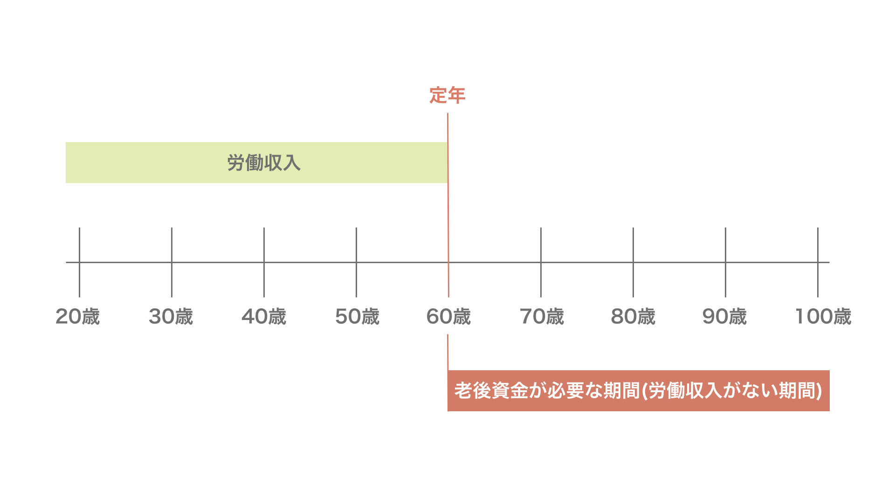
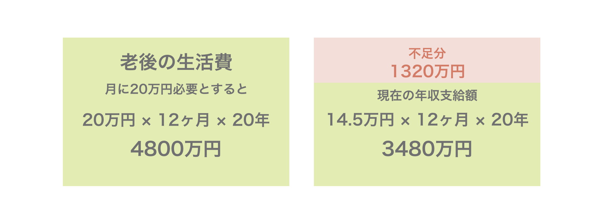
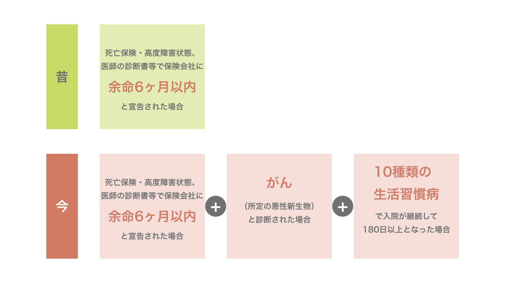
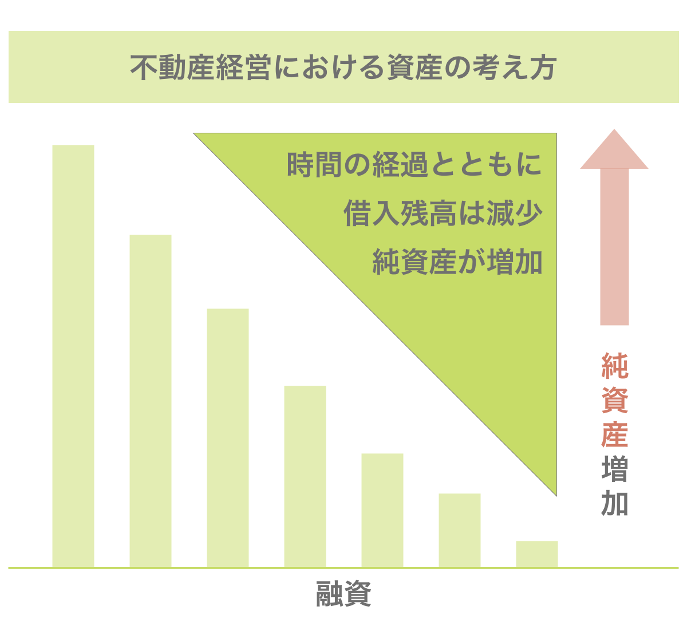
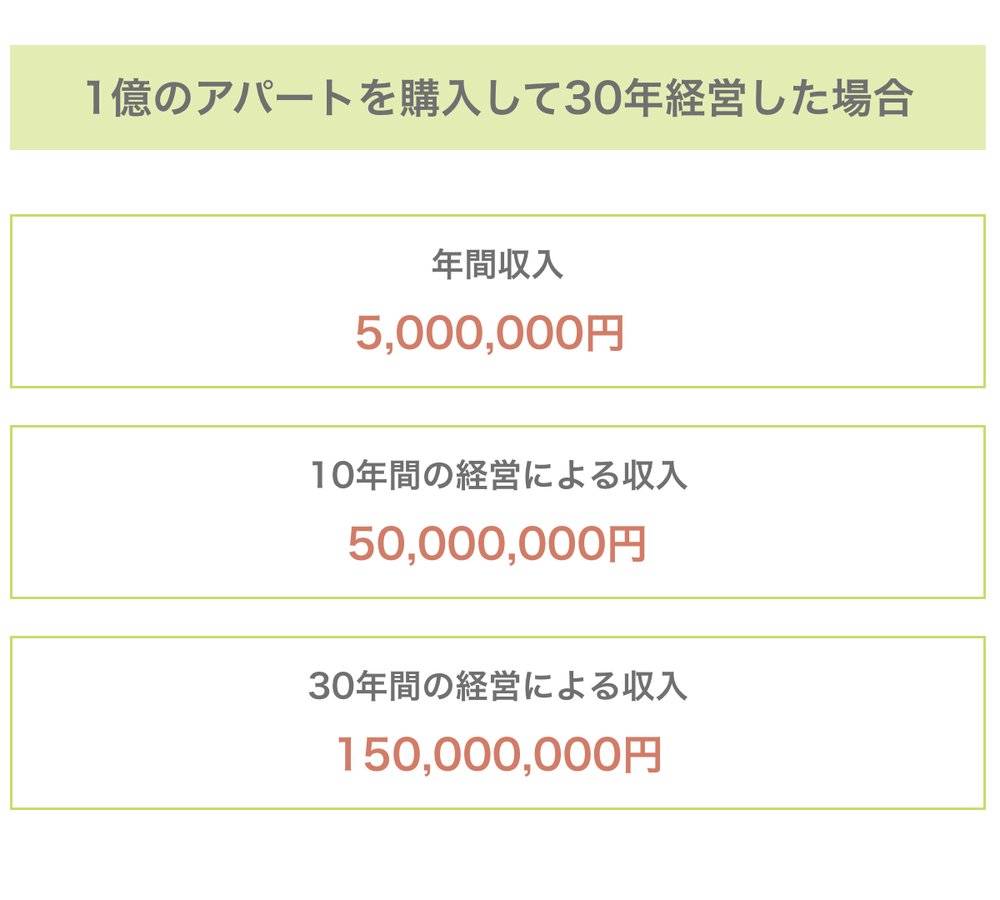
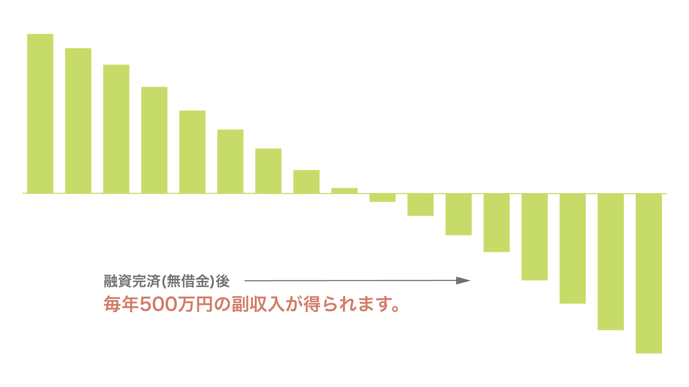
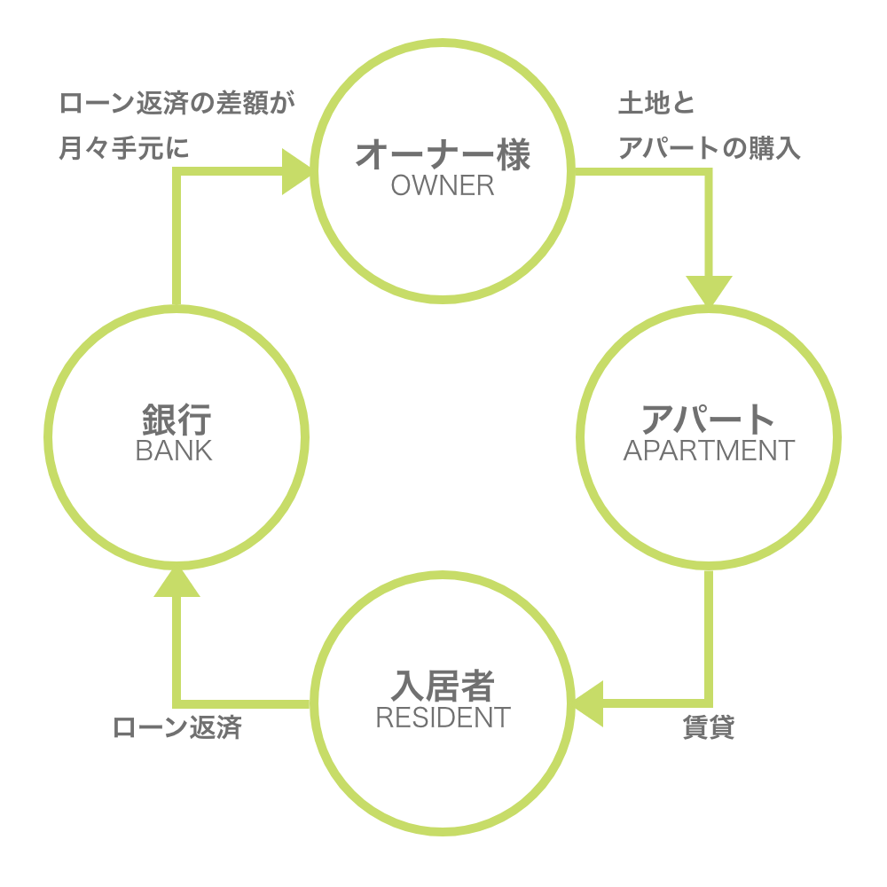

problems
人生100年時代。未来のために今から出来ることを。
織田信長が好んだとされる演目「敦盛」には、「人生五十年」という有名な一節があります。
当時は50歳から60歳程度が寿命とされていましたが、今や人生100年と呼ばれる時代です。
たとえ60歳で定年を迎えたとしても、残された人生は40年あります。
もちろん、生きる時間が長くなった分だけ、出来ることも増えたでしょう。
一方で、健康寿命や年金、医療費や生活費など、寿命が長くなったことで生まれた心配事もあると思います。
もし将来に少しでも備えたいと思ったのなら、アパート経営を検討してみてはいかがでしょうか。
株式会社ホゲホゲなら、土地がなくても、頭金が少なくてもアパート経営を始めることができます。
平均入居率は95％を超えているため、初めての方でも確実に資産づくりな資産づくりが可能です。
あなたの心配を少しでも和らげるために。
株式会社ホゲホゲは、お客様の未来の備えを全力でサポートいたします。
不動産投資の3つのポイントを知る
3 points to start real estate investment

1.私的年金として活用する
Checkpoint #1
人生100年時代、定年後40年分の老後資金が必要。
100歳まで生き、60歳を定年と考えた場合、残り40年間の資産を持っておく必要があります。

Checkpoint #2
公的年金で不足した分をアパート経営の収入で補うことができる。
少子高齢化と言われて久しい現代日本において、今後年金の支給額が減ることはあっても増えることはないと言っていいでしょう。まずは、老後の生活に必要な金額を確認してみましょう（下図参照）。公的年金の支給額では生活費を賄うのが難しいことがわかります。アパート経営をすれば、月々の家賃収入で不足分を補うことが可能です。

老後のことを考えて不安になる将来よりも老後資金の不安のない将来を選びませんか？

2.団体信用生命保険を生命保険代わりに
Checkpoint
団体信用生命保険の補償範囲はかつてと比較して大きく変わっている。
アパート経営によって加入できる「団体信用生命保険」をご存知でしょうか？オーナー様に万が一のことがあった場合にローンの残債を保障する保険です。
この団体信用生命保険、以前と比較して大きく変わっているんです。
今では生命保険代わりにアパート経営をはじめるお客様も多くいらっしゃいます。
◆団体信用生命保険の補償範囲の比較

ローン残債0円。条件を満たすと完治してもローンの残債は0円のまま。
アパート経営によって、現在お客様が加入している生命保険より安い保険料で同等の保障が得られる可能性があります。
※詳細は保険商品ごとに異なります。

3.現物資産で将来の備えができる
Checkpoint
融資を完済すれば優良な土地とアパートが手に入る。
中長期で経営して行うことにより、安定した家賃収入を得ることができるのがアパート経営の特長です。
堅実に経営することで、時間が経つにつれて借入残高は減少し、純資産が増えていきます。



もし貯蓄を資産運用に回そうと考えているのなら、アパート経営はおすすめの手法の1つです。
solusion
資産づくりとしてのアパート経営について。
アパート経営は、不動産投資のひとつです。
アパートを1棟もしくは複数棟所有するオーナーとなり、部屋を第三者に貸すことで家賃収入を得ることを目的とします。
不動産自体を担保にすることで、金融機関から購入資金を借り入れ、家賃収入からをローンを返済。
その差額が毎月の利益になります。
ローン完済後は無担保の不動産を資産として残すことができます。

信頼できるパートナー企業と取り組めるかがカギ。
アパート経営を生業にしている企業は多くあります。
その中から、自分の将来を任せられる企業を選ぶことはとても重要です。
アパート経営は物件を買って終わりではありません。購入以降、入居者が住みたい、魅力的だと思ってもらうことが必要です。
多くの入居者は「立地（駅から近い）・デザイン性・間取り」を考慮して判断しているのではないでしょうか。
ホゲホゲのアパートは入居者の声を集め、住みたい、魅力的だと感じてもらえるよう、日々進化しています。
それは、オーナー様にとって安定・安心できる不動産投資をつづけてもらうために必要不可欠だと考えているからです。
入居者が住みたいと思う物件とは。
ホゲホゲのアパート経営が選ばれる理由。

デザイナーズアパート
ホゲホゲのデザイナーズアパートは、土地の形状や条件に合わせ、１棟ずつデザイナーがオリジナルのプランニング・設計。敷地条件を加味した上で意匠についても検討し、そのオリジナリティとデザイン性は安定した入居率を実現しています。

駅近（駅徒歩10分の立地）
全国主要都市において、市場診断を行い、入居ニーズの高いエリアに絞って展開エリアを策定し、地元や大手の不動産会社と連携。市場に出ない良質な物件を入手し、収益物件用地として提供し続けています。

人気の間取り（ロフト・スキップフロア）
入居者に根強い人気の「ロフト」が特徴的なホゲホゲのアパート。創業以来研究を重ね、従来のロフトの概念を大きく覆しています。それは、内覧に起こしいただいた方への強い印象をあたえ、入居申し込みの大きな理由の一つとなっております。

充実の設備
グレードの高い設備（サーモ水栓・温水洗浄便器・シャンプドレッサー付洗面化粧台等）を揃え、気になる床の防音対策も十分に施しています。入居者の暮らしやすさに自信を持ってご案内することができます。
Owner Voice
日本全国、多くのお客様が
ホゲホゲで資産づくりをはじめています。
創業30年の中で、6,000名を超えるオーナー様にご契約頂いています。
ご契約いただいている方は99％が会社員、公務員の方で、年齢は40代以下の方が約85%を超えます。
老後の年金だけでは不安というお客様が多く、ホゲホゲはそんな方を全力でサポートしています。

31歳 男性 公務員
年金対策としての不動産投資。
少ない自己資金でも可能な人生100年時代を生き抜くための賢い選択だと思っています。
老後の年金対策を考える中、アパート経営というものを知りました。アパート経営は、毎月入る家賃収入が年金代わりになることと、融資を利用して資産形成できる点に魅力を感じました。ホゲホゲに決めた一番のポイントは、上場企業であり、長年のアパート管理経験、実績があるという点です。
自己資金の少ない私でもキャッシュが回るような提案（立地や融資など）をしていただいたのも大きなポイントです。
ホゲホゲさんに出会い、いくつかの物件をご紹介いただきながら、実際の物件や実績を知るにつれ、これなら自分でもできると、一サラリーマンの夢が現実となっていきました。

53歳 女性 パート
仕事をしながらでもアパート経営できている嬉しい実感。
管理などはすべてホゲホゲさんにお任せできるのが魅力です。
老後の資産について備えておく必要があると考え、できるだけ若いうちの方がよいと思い、投資を始める決意をしました。
アパート経営というものも知ってはいましたが、土地を持っている人の話だと思っていたので、ホゲホゲさんの説明を聞いてイメージが変わりました。自己資金がわずかでもアパートオーナーになれるとは知りませんでした。
もちろん不安もありましたが、ホゲホゲはリスクやその対策もよく考えられているので、素人でも踏み込みやすいと思います。
管理などもすべてお任せなので、仕事をしながらでもアパート経営ができるのはいいですね。

45歳 男性 経営者
今では2棟のアパートオーナーに。
将来は息子たちに相続できるという喜びも大きいです。
とあるベストセラーを読み、資産に対する考え方が変わったのが、アパート経営を始めたきっかけです。
アパート経営は不動産投資の中でも一番安定感があると思っています。
ホゲホゲは新築アパート経営では有名で、ランニングコストが一定なので見通しが立てやすく、少ないイニシャルコストで始められるのが魅力です。中古アパートよりも新築の方が割高かと思っていましたが、メンテナンスを考えるとそうでもないと思うようになりました。
ホゲホゲの説明はポイントをついていて分かりやすく、明確でした。次の物件の提案もスムーズに行ってくれて、対応が早い印象です。
performance
ホゲホゲのアパート経営は家賃収入以外にも、
様々なメリットがあります。

無担保の「駅徒歩10分内の優良な土地」が手元に残ります。
マンションの1室に投資した場合、老朽化にともない価値が下がっていき、売却や建て替えも容易ではありません。一方、アパート経営の場合は建物が仮に老朽化しても、価値のある土地が資産として残ります。つまり、家賃収入の中からローンを返済していくだけで「資産づくり」ができるのです。

長期的に安定した収入が得られます。
株やFXといった投資は日々変動しますが、家賃は変動リスクが少なく、安定した収入が得られる手堅い投資です。また、インフレに強く、金融資産のようには目減りしません。尚、当社の提供するアパートは主要都市徒歩10分圏内の優良物件のため、長期にわたり安定した資産価値が期待できます。

私的年金の生命保険の代わりになります。
アパート購入のためのローンには銀行の指定する「団体信用生命保険」が組み込まれています。オーナー様に万一のことがあった場合、ローンの残額は生命保険によって完済され、ご家族には無借金のアパート（数千万の資産）と毎月数十万のキャッシュフローが残ります。

所得税や住民税等の節税効果があります。
家賃収入を得ることでサラリーマン、公務員の方でも確定申告を行うことが可能になります。アパート購入にかかった諸経費や、金利などを経費に加えることができるため、節税効果が期待できます。
ホゲホゲではお客様に安定したアパート経営を行っていただくための体制が整っています。
Point #1
東京証券取引所ジャスダック上場会社としての信頼。
アパート経営のパイオニア。
ホゲホゲグループは、1990年創業、2002年にはジャスダック市場(現：東京証券取引所ジャスダック)へ株式上場。創業以来、一般投資家向け賃貸住宅経営のパイオニアとして、土地の選定から企画、設計、施工、お引渡し後の賃貸管理まで独自の一貫したサービスをご提供しています。
Point #2
年間着工棟数ランキング4年連続日本全国No.1の実績
全国賃貸住宅新聞発表による年間着工棟数ランキングでホゲホゲハーモニーが2015-2018年度4年連続自社開発棟数で日本全国第１位の実績を獲得することができました。年間着工棟数ランキングは、全国の建設会社約1,500社を対象にした調査を行い全国賃貸住宅新聞社が毎年発表している調査結果となります。
Point #3
アパート経営開始から安定した収益を生み出す3つの保証制度
アパート経営の収益となる家賃収入。ホゲホゲでは、アパート経営開始直後から収益が入るよう、初回の入居が満室になるまで家賃を100％保証する制度を設けております。
100％初回満室保証
アパート経営を開始してから全ての住戸について、初回の入居がご成約になるまで家賃を100%保証しています。
6ヶ月の家賃滞納保証
万一、入居者様からの家賃のお支払いが遅れた場合、ホゲホゲが最長6ヶ月、100%家賃を保証致します。
土地・建物保証
ホゲホゲがご提供する全ての土地・建物には引渡し後、建物については10年間、土地については20年間の保証がされております。
会社概要
株式会社ホゲホゲ
東京証券取引所ジャスダック上場企業 ホゲホゲグループ事業会社
東京都ホゲホゲ区ホゲホゲ1−1−1
| 設立年月日 | 1994/05/28 |
|---|---|
| 資本構成 | 株式会社ホゲホゲグループ
（東京証券取引所 JASDAQ証券コード xxxx） 100% 出資 |
| 事業内容 | アパート企画・マーケティング事業 |
| 免許 | 宅地建物取引業 東京都知事許可 |
| 代表取締役 | 山田 太郎 |
| ホールディング カンパニー |
株式会社ホゲホゲグループ |
| 連結子会社 | 株式会社ホゲホゲプロデュース
株式会社ホゲホゲコミュニケーションズ 株式会社ホゲホゲサービス |